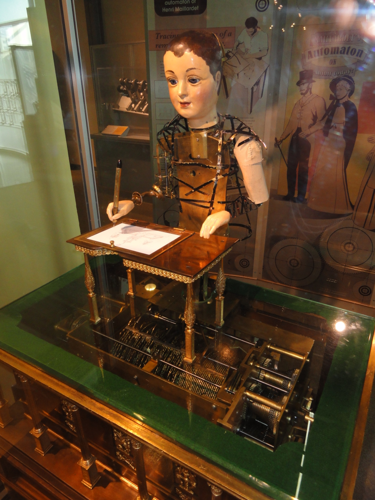

L’idée de créer des machines capables d’imiter ou d’assister l’être humain ne date pas d’aujourd’hui. Dès l’Antiquité, des inventeurs imaginent des automates mécaniques capables de se mouvoir grâce à des systèmes d’engrenages, de poids ou de vapeur.
Les premiers automates
Dans la Grèce antique, Héron d’Alexandrie conçoit des dispositifs capables d’ouvrir des portes ou de déplacer des objets grâce à la pression de l’air ou de l’eau. Au Moyen Âge, des horlogers européens fabriquent des automates humanoïdes capables de jouer de la musique ou d’écrire.

Exemple d’automate mécanique ancien
La naissance de la robotique moderne
Le mot « robot » apparaît pour la première fois en 1920 dans une pièce de théâtre de Karel Čapek. Il vient du mot tchèque robota, qui signifie « travail forcé ». À partir du XXᵉ siècle, la robotique se développe grâce aux progrès de l’électricité, de l’électronique et de l’informatique.
Les robots industriels
En 1961, le premier robot industriel, Unimate, est installé dans une usine General Motors. Il est capable de déplacer des pièces métalliques lourdes avec une précision inégalée pour l’époque.
Les robots autonomes
Avec l’arrivée des microprocesseurs dans les années 1970, les robots deviennent programmables et capables de prendre des décisions simples. Les années 2000 marquent l’essor des robots mobiles, comme les robots aspirateurs ou les robots explorateurs envoyés sur Mars.
Unimate, premier robot industriel (1961)
La robotique aujourd’hui
Aujourd’hui, la robotique est un domaine multidisciplinaire mêlant mécanique, électronique, informatique et intelligence artificielle. Les robots sont présents dans l’industrie, la médecine, l’exploration spatiale, l’agriculture et même dans les foyers.
Les progrès récents en IA permettent désormais aux robots d’apprendre, de s’adapter à leur environnement et d’interagir avec les humains de manière plus naturelle.